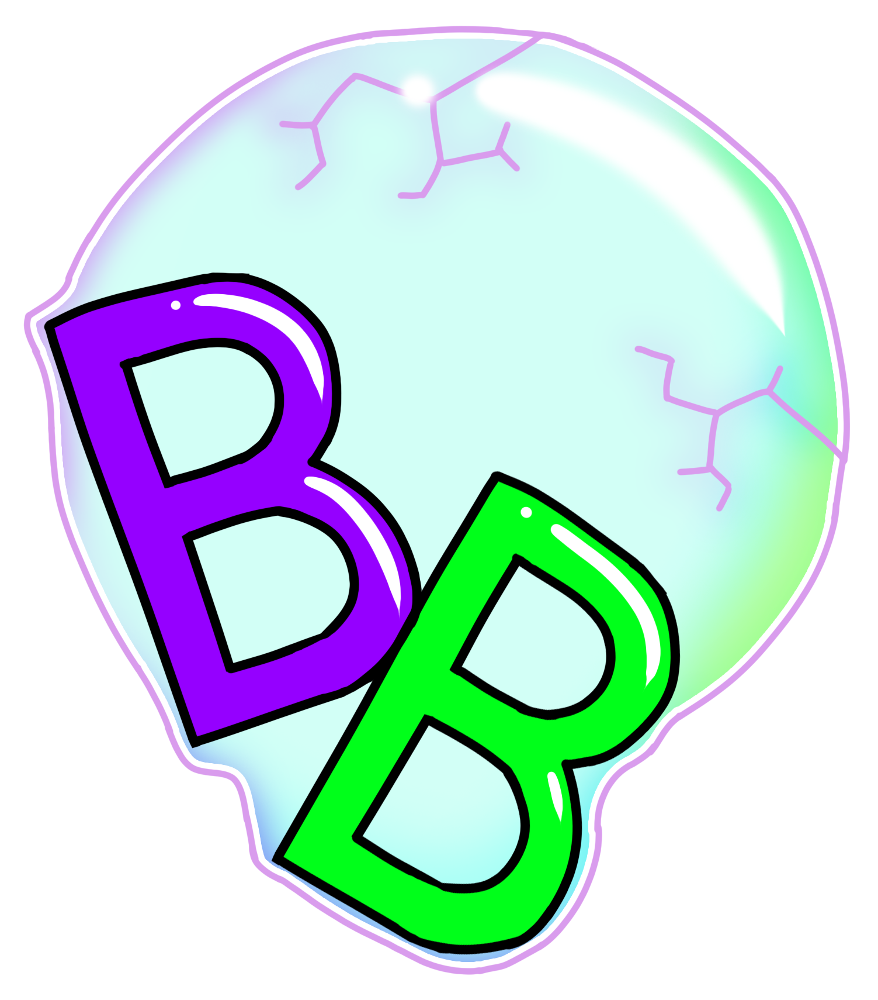

<!--
  ~ This program has been developed by students from the bachelor Computer Science at Utrecht University
  ~ within the Software Project course. © Copyright Utrecht University (Department of Information and
  ~ Computing Sciences)
  -->

<mat-list fxLayout="column" class="sidenav">
    <button mat-button (click)="onSidenavClose()">
        <mat-icon>menu</mat-icon>
        
    </button>
    <mat-divider></mat-divider>
    <button mat-button [routerLink]="'/home'" (click)="onSidenavClose()">
        <mat-icon>home</mat-icon>
        Home
    </button>
    <mat-divider></mat-divider>
    <button mat-button [routerLink]="'/teacher-overview'" *ngIf="userDetails?.role == 'teacher'" (click)="onSidenavClose()">
        <mat-icon>class</mat-icon>
        Klas overzicht
    </button>
    <mat-divider *ngIf="userDetails?.role == 'teacher'"></mat-divider>
    <button mat-button [routerLink]="'/class-overview'" *ngIf="userDetails?.role == 'student'" (click)="onSidenavClose()">
        <mat-icon>class</mat-icon>
        Klas overzicht
    </button>
    <mat-divider *ngIf="userDetails?.role == 'student'"></mat-divider>
    <button mat-button [routerLink]="'/profile'" (click)="onSidenavClose()">
        <mat-icon>person</mat-icon>
        Profiel
    </button>
    <mat-divider></mat-divider>
    <button mat-button (click)="logoutButton()">
        <mat-icon>login</mat-icon>
        Log uit
    </button>
    <mat-divider></mat-divider>
</mat-list>